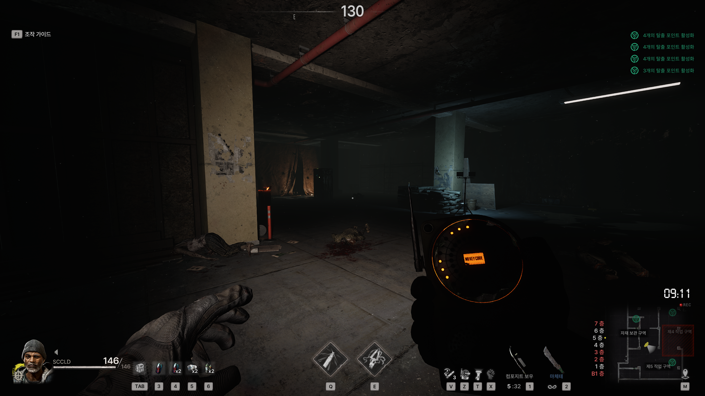
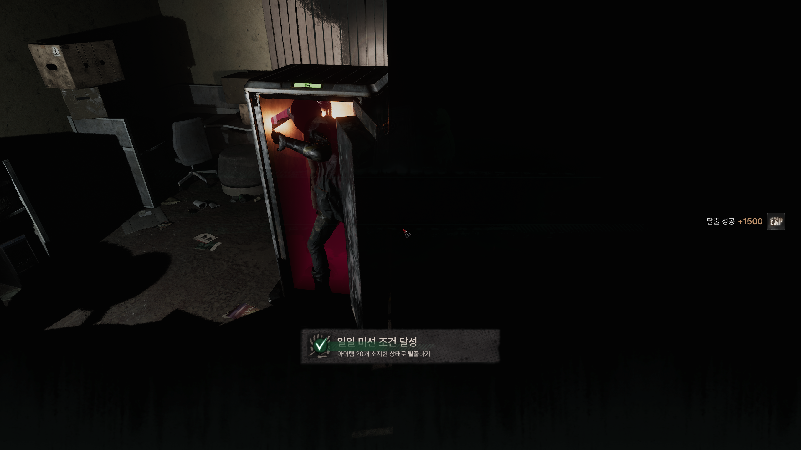
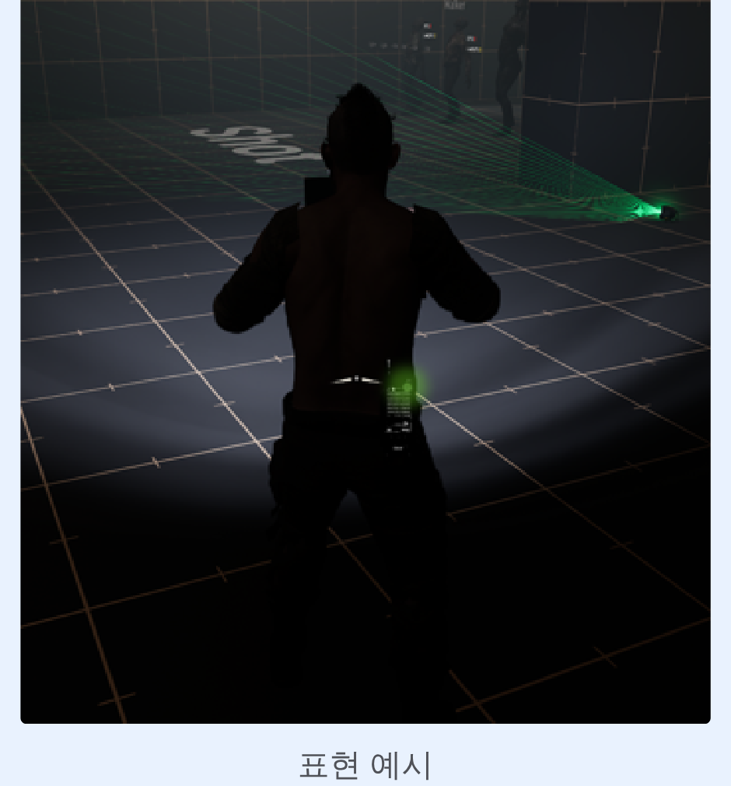

DESIGN & PROTOTYPE
🚪 탈출 시스템
OneWayTicketStudio · The Midnight Walkers: 탈출 포인트 & 탈출 포드 추적 장치 기획
개요
In-game에서 아이템을 파밍해 성장시키는 것이 목표인 게임에서, 탈출 포인트는 소지품을 지킨 채 라운드를 이탈하는 유일한 수단입니다. 맵 곳곳에 참가 인원보다 적은 수로 배치되어 자연스러운 경쟁 구도를 만들고, 특정 시점에만 활성화되는 비활성화 → 활성화 → 작동의 3단계 흐름으로 설계했습니다. 여기에 탈출 포드 추적 장치를 결합해, 활성화된 포인트의 위치를 소리와 표시기로 유추하는 대신 그 소리가 주변 플레이어에게도 들려 위치가 노출되는 위험–보상 구조를 더했습니다.
화면

탈출 포드 추적 장치: 원형 미터로 방향·거리·포드 개수 탐지

탈출 코드 추출: 활성화된 포드에서 코드를 긁어와 저장

탈출 완료: 3인칭 고정 카메라로 탈출 연출을 관전
성과
- 출시 전 유저 테스트 단계에서 "가장 완성도 높은 탈출 시스템"이라는 커뮤니티 호평을 받음
- 당시 대중적인 레퍼런스였던 다크 앤 다커는 탈출 포탈의 위치를 찾기 어렵다는 문제가 있었음 - 추적 장치를 도입해 직관적으로 탈출구를 찾을 수 있게 하는 동시에, 소리로 위치가 노출되는 리스크를 더해 탐색의 긴장감을 유지
- 팀 탈출 요소가 없어 먼저 발견한 탈출구를 팀원과 함께 이용할 수 없던 문제를, 탈출 코드 추출·저장 구조로 해결 - 원하는 시점에 팀원과 함께 탈출 가능하도록 개선
탈출 포인트 · 핵심 규칙
| 타입 | 탈출 포인트(로비로 이동) / 레드 포인트·가칭(레드룸으로 이동) 2종으로 구분 |
|---|---|
| 배치 | 월드 곳곳에 비활성화 상태로 배치, 상호작용 불가 |
| 활성화 | Phase 조건에 따라 활성화: 폐쇄(예정) 층에서는 활성화되지 않음 |
| 재사용 | 한 번 활성화된 포인트는 다시 활성화되지 않음 (사용 후 비활성화 상태로 고정) |
| 사용 인원 | 포인트 1개당 1명만 사용 가능 |
| 작동 방식 | 상호작용(밸브 회전)으로 진행: 중단해도 진행률 유지, 재개 시 이어서 진행 |
| 활성화 시간 | 포인트 타입별로 데이터화해 조절 가능 (기획 데이터 컬럼으로 관리) |
탈출 포인트 · 동작 흐름
- 비활성화: 평소 상태, 상단 라이트 Off, 어떤 상호작용도 불가능
- 활성화: 조건 충족 시 기계음·스파크와 함께 등장, 포인트 타입별 색상(탈출=초록 / 레드=빨강) 조명으로 원거리에서도 식별 가능
- 작동: 밸브를 상호작용하면 문이 열리기 시작, 진행률 25/50/75/100%마다 상단 램프가 하나씩 순차 점등되어 진행 상황을 시각적으로 표시
- 탈출 완료: 문 안으로 진입하면 무적 상태로 전환되어 탈출 처리, 3인칭 고정 카메라로 자신의 탈출 연출을 관전(다른 유저에게는 관전 팝업 노출)
- 사후 처리: 사용 완료된 포인트는 붉은 라이트로 "사용됨" 표시, 이후 재사용 불가
Prototype 검증 후 개선: 기존에는 문이 완전히 열려 라이트가 켜진 뒤에야 탈출 콜리전이 활성화돼 진입이 늦게 느껴졌습니다. 문이 열리기 시작하는 시점부터 콜리전을 활성화하도록 조정해, "문이 열린다 → 이동한다 → 탈출한다"는 동작이 더 직관적이고 빠르게 인지되도록 개선했습니다.
탈출 포드 추적 장치 · 개요
활성화된 탈출 포드(포인트)의 위치를 미리 알 수 있는 휴대 장치입니다. 포드에 가까워질수록 비프음이 빨라지는 방식으로 위치를 유추하지만, 이 소리는 주변의 다른 플레이어와 좀비에게도 들려 자신의 위치가 함께 노출되는 리스크를 동반합니다. 장치는 두 손을 모두 점유하므로 무기·소모 아이템과 동시에 들 수 없고, 활성화된 포드에서 탈출 코드를 긁어와 디바이스당 1개까지 저장할 수 있습니다.
탈출 포드 추적 장치 · 표시 정보
| 방향 · 거리 | 원형 미터로 표현: 시계 방향 위치로 방향을, 색상 진하기(3단계 거리 구간)로 거리를 동시에 표시. 방향이 겹치면 더 가까운 값을 우선 표시 |
|---|---|
| 포드 개수 | 탐지 범위 내 존재하는 포드 수를 미터 중앙에 표시, 범위 밖이면 0 |
| 코드 보유 여부 | 하단 LED·디스플레이로 표시: 코드 없이 포드에 근접하면 적색 점멸, 코드 보유 시 초록색 점등 |
| 사운드 | 가장 가까운 포드 기준으로만 재생, 거리가 가까울수록 피치·볼륨 상승 |
| 캐릭터 외형 | 탈출 코드 보유 시 캐릭터 후면에 초록색 램프가 켜져, 다른 유저도 코드 보유 여부를 인지 가능 |
| 조작 | 버튼으로 장치를 꺼내는 즉시 전원 On, 다른 장비로 교체 시 자동으로 전원 Off |
탐지 반응 범위는 최대/중간/최소 거리 3단계 값으로 데이터화해, 원형 미터의 색상 구간 전환 지점과 근접 경고(적색 점멸) 기준을 기획 값만으로 조절할 수 있도록 설계했습니다.

표시기 목업: 미터 중앙에 포드 개수, 하단 LED로 코드 보유 여부(적색 점멸/초록 점등)를 표시

캐릭터 외형: 탈출 코드 보유 시 후면에 초록색 램프가 켜져 다른 유저도 인지 가능